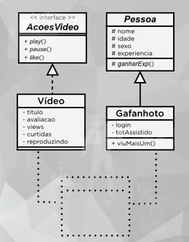

Aprenda V Java
Tudo sobre POO Java Parte 6
Polimorfismo Sobrecarga - Parte 2
Sabemos que o polimorfismo de sobreposição, que podemos substituir um método que vem da classe mãe na classe filha. Nesse caso temos a mesma assinatura em classes diferentes. Já no polimorfismo de sobrecarga é o contrário, são assinaturas diferentes dentro da mesma classe, todos os métodos tem o mesmo nome, dentro da mesma classe, mas com assinaturas diferentes (passagens de parâmtros).
Vamos supor que um cachorro tenha o método reagir (e as reações podem ser várias, no caso, quatro), como no exemplo abaixo:

Vamos supor que tenhamos a classe Cachorro, que herda características de Lobo, e esta herda de Mamifero, que por último herda de Animal.
No projeto anterior, crie a classe Lobo:
package projetozoo;
public class Lobo extends Mamifero {
@Override
public void emitirSom() {
System.out.println("Auuuuuuuuuuu...");
}
}
Altere a classe Cachorro, de forma que o extends venha de Lobo:
package projetozoo;
public class Cachorro extends Lobo {
@Override
public void emitirSom() {
System.out.println("Au! Au! Au!");
}
}
E na classe principal:
package projetozoo;
public class ProjetoZoo {
public static void main(String[] args) {
Mamifero m = new Mamifero();
m.emitirSom();
Lobo l = new Lobo();
l.emitirSom();
Cachorro c = new Cachorro();
c.emitirSom();
}
}
No Java, não podemos esquecer do @Override pra sobrepor, algumas linguagens Orientadas a Objetos não utilizam essa anotação.
Como no Java temos tipos primitivos explícitos, facilita a implementação de sobrecarga, desde que as passagens de parâmetro tenha alguma diferença de tipos. Veja um exemplo que funciona em Java, mas algumas linguagems não funcionam (colocaremos em Cachorro):
public void reagir(String frase) {
}
public void reagir(int hora, int min) {
}
public void reagir(boolean dono) {
}
public void reagir(int idade, float peso) {
}
Lembrando que na sobrecarga, os parâmetros devem ser de tipos diferentes, não sendo possível, por exemplo, dois métodos de mesmo nome que recebem dois inteiros cada, mesmo que o tipo de retorno sejam diferentes. É possível ter um método sem parâmetros também.
O código completo de Cachorro é esse:
package projetozoo;
public class Cachorro extends Lobo {
@Override
public void emitirSom() {
System.out.println("Au! Au! Au!");
}
public void reagir(String frase) {
if(frase.equals("Toma Comida") || frase.equals("Olá")) {
System.out.println("Abanar e Latir");
}
else {
System.out.println("Rosnar");
}
}
public void reagir(int hora, int min) {
if(hora < 12) {
System.out.println("Abanar");
}
else if(hora >= 18) {
System.out.println("Ignorar");
}
else {
System.out.println("Abanar e Latir");
}
}
public void reagir(boolean dono) {
if(dono == true) {
System.out.println("Abanar");
}
else {
System.out.println("Rosnar e Latir");
}
}
public void reagir(int idade, float peso) {
if(idade < 5) {
if(peso < 10) {
System.out.println("Abanar");
}
else {
System.out.println("Latir");
}
}
else {
if(peso < 10) {
System.out.println("Rosnar");
}
else {
System.out.println("Ignorar");
}
}
}
}
E na classe principal, coloque normalmente os objetos:
package projetozoo;
public class ProjetoZoo {
public static void main(String[] args) {
Cachorro c = new Cachorro();
c.reagir("Olá");
c.reagir("Vai Apanhar");
c.reagir(11, 45);
c.reagir(20, 00);
c.reagir(true);
c.reagir(false);
c.reagir(2, 12.5f);
c.reagir(17, 4.5f);
}
}
PS: A sobrecarga também pode ser usada em métodos construtores, seguindo a mesma regra de parâmetros diferentes.
Projeto Final em Java - Parte 1
Agora vamos fazer um exercício no qual colocaremos os conhecimentos em POO aqui. Veja o diagrama que usaremos:
A classe Video tem uma interface chamada AcoesVideo, e a classe Gafanhoto herda de outra classe, a Pessoa (abstrata). Elas terão uma ligação que faremos posteriormente.
No exercício, terá os três pilares, Encapsulamento (Video e AcoesVideo), Herança (Gafanhoto e Pessoa), e veremos também Polimorfismo.
Crie um novo projeto com classe principal para isso, com um nome como ProjetoYoutube.
Esse é o código da interface AcoesVideo:
package projetoyoutube;
public interface AcoesVideo {
public void play();
public void pause();
public void like();
}
A característica de um método abstrato é que ele é declarado, mas não implementado. Ele só será implementado quando implementarmos a interface. Isso faremos na classe Video.
Esse é o código da classe Video:
package projetoyoutube;
public class Video implements AcoesVideo {
private String titulo;
private int avaliacao;
private int views;
private int curtidas;
private boolean reproduzindo;
public Video(String titulo) {
this.titulo = titulo;
this.avaliacao = 1;
this.views = 0;
this.curtidas = 0;
this.reproduzindo = false;
}
@Override
public void like() {
this.curtidas++;
}
@Override
public void pause() {
this.reproduzindo = false;
}
@Override
public void play() {
this.reproduzindo = true;
}
@Override
public String toString() {
return "Video{" + "titulo=" + titulo + ", avaliacao=" + avaliacao + ", views=" + views + ", curtidas=" + curtidas + ", reproduzindo=" + reproduzindo + '}';
}
public String getTitulo() {
return titulo;
}
public void setTitulo(String titulo) {
this.titulo = titulo;
}
public int getAvaliacao() {
return avaliacao;
}
public void setAvaliacao(int avaliacao) {
this.avaliacao = avaliacao;
}
public int getViews() {
return views;
}
public void setViews(int views) {
this.views = views;
}
public int getCurtidas() {
return curtidas;
}
public void setCurtidas(int curtidas) {
this.curtidas = curtidas;
}
public boolean getReproduzindo() {
return reproduzindo;
}
public void setReproduzindo(boolean reproduzindo) {
this.reproduzindo = reproduzindo;
}
}
E na classe principal, isso pra mostrar os resultados:
package projetoyoutube;
import java.util.List;
import java.util.ArrayList;
public class YoutubePoo {
public static void main(String[] args) {
List<Video> v = new ArrayList<>(); // Importe java.util.List e java.util.ArrayList
v.add(new Video("Aula 1 de POO"));
v.add(new Video("Aula 12 de Java"));
v.add(new Video("Aula 15 de HTML5"));
System.out.println(v.get(0).toString());
}
}
Até o momento, já criamos objetos usando Encapsulamento.
Vamos criar a Classe Pessoa da segunda parte, esse é o código:
package projetoyoutube;
public abstract class Pessoa {
protected String nome;
protected int idade;
protected String sexo;
protected float experiencia;
public Pessoa(String nome, int idade, String sexo) {
this.nome = nome;
this.idade = idade;
this.sexo = sexo;
this.experiencia = 0;
}
@Override
public String toString() {
return "Pessoa{" + "nome=" + nome + ", idade=" + idade + ", sexo=" + sexo + ", experiencia=" + experiencia + '}';
}
public String getNome() {
return nome;
}
public void setNome(String nome) {
this.nome = nome;
}
public int getIdade() {
return idade;
}
public void setIdade(int idade) {
this.idade = idade;
}
public String getSexo() {
return sexo;
}
public void setSexo(String sexo) {
this.sexo = sexo;
}
public float getExperiencia() {
return experiencia;
}
public void setExperiencia(float experiencia) {
this.experiencia = experiencia;
}
}
Por essa classe acima ser abstrata, não podemos criar um objeto Pessoa na classe principal.
E agora, criaremos a classe Gafanhoto, que chamará a classe Pessoa:
package projetoyoutube;
public class Gafanhoto extends Pessoa {
private String login;
private int totAssistido;
public Gafanhoto(String nome, int idade, String sexo, String login) {
super(nome, idade, sexo); // Isso chama o construtor da classe Pessoa e permite adicionar seus dados ao Gafanhoto
this.login = login;
this.totAssistido = 0;
}
public void assistirMaisUm() {
this.totAssistido++;
}
@Override
public String toString() {
return "Gafanhoto{" + super.toString() + // O Super chama Pessoa junto com Gafanhoto
"login=" + login + ", totAssistido=" + totAssistido + '}';
}
public String getLogin() {
return login;
}
public void setLogin(String login) {
this.login = login;
}
public int getTotAssistido() {
return totAssistido;
}
public void setTotAssistido(int totAssistido) {
this.totAssistido = totAssistido;
}
}
PS: O método super() dentro do construtor é o que permite que ocorra a sobreposição de construtores. Usando ele, podemos usar os parâmetros do construtor da classe pai e também adicionar outros no construtor da classe filha. É possível chamar qualquer método de classes pais usando o super, caso sejam necessário serem chamados em outros métodos em classes filhas.
E no main, podemos fazer assim:
package projetoyoutube;
import java.util.List;
import java.util.ArrayList;
public class YoutubePoo {
public static void main(String[] args) {
List<Video> v = new ArrayList<>();
v.add(new Video("Aula 1 de POO"));
v.add(new Video("Aula 12 de Java"));
v.add(new Video("Aula 15 de HTML5"));
System.out.println(v.get(0).toString());
List<Gafanhoto> g = new ArrayList<>();
g.add(new Gafanhoto("Jubileu", 22, "M", "CorvoJubileu"));
g.add(new Gafanhoto("Creuza", 12, "F", "Creuzita"));;
System.out.println(g.get(0).toString());
}
}
Nesse exemplo acima, nós mostramos o conceito de Herança.